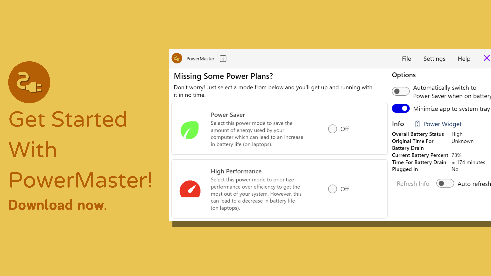

Features
- Switch between the Power Saver and High Performance power modes with a click of a button
- Enable the option to keep PowerMaster minimized in your system tray for easy access and quick actions
- Let PowerMaster automatically select the Power Saver power mode whenever you are on battery power
- Monitor battery-relevant information like its overall status, time for full charge and discharge, and whether your laptop is plugged in or not
- View PowerMaster's included Power Widget for efficient and simplified access to battery and power information
- Select between light and dark mode for the app to display